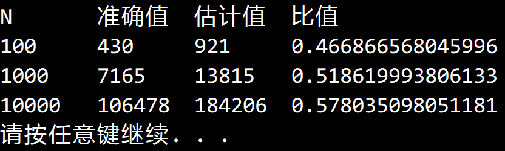

© 2019 《算法（第四版）》C# 题解 | Provided By 沈星繁
搜索解答
目前已完成到 3.1
2.3.6
上次更新：2019-04-17
发现了题解错误/代码缺陷/排版问题？请点这里：如何：提交反馈 。
解答
运行结果如下：

代码
新建一个 QuickSortAnalyze 类，在 QuickSort 的基础上添加一个 CompareCount 属性，用于记录比较次数。重写 Less 方法，每调用一次就让 CompareCount 增加 1 。
using System;
using System.Diagnostics;
namespace Quick
{
/// <summary>
/// 自动记录比较次数以及子数组数量的快速排序类。
/// </summary>
public class QuickSortAnalyze : BaseSort
{
/// <summary>
/// 比较次数。
/// </summary>
public int CompareCount { get; set; }
/// <summary>
/// 是否启用打乱。
/// </summary>
public bool NeedShuffle { get; set; }
/// <summary>
/// 是否显示轨迹。
/// </summary>
public bool NeedPath { get; set; }
/// <summary>
/// 大小为 0 的子数组数量。
/// </summary>
public int Array0Num { get; set; }
/// <summary>
/// 大小为 1 的子数组数量。
/// </summary>
public int Array1Num { get; set; }
/// <summary>
/// 大小为 2 的子数组数量。
/// </summary>
public int Array2Num { get; set; }
/// <summary>
/// 默认构造函数。
/// </summary>
public QuickSortAnalyze()
{
this.CompareCount = 0;
this.NeedShuffle = true;
this.NeedPath = false;
this.Array0Num = 0;
this.Array1Num = 0;
this.Array2Num = 0;
}
/// <summary>
/// 用快速排序对数组 a 进行升序排序。
/// </summary>
/// <typeparam name="T">需要排序的类型。</typeparam>
/// <param name="a">需要排序的数组。</param>
public override void Sort<T>(T[] a)
{
this.Array0Num = 0;
this.Array1Num = 0;
this.Array2Num = 0;
this.CompareCount = 0;
if (this.NeedShuffle)
Shuffle(a);
if (this.NeedPath)
{
for (int i = 0; i < a.Length; i++)
{
Console.Write(" ");
}
Console.WriteLine("\tlo\tj\thi");
}
Sort(a, 0, a.Length - 1);
Debug.Assert(IsSorted(a));
}
/// <summary>
/// 用快速排序对数组 a 的 lo ~ hi 范围排序。
/// </summary>
/// <typeparam name="T">需要排序的数组类型。</typeparam>
/// <param name="a">需要排序的数组。</param>
/// <param name="lo">排序范围的起始下标。</param>
/// <param name="hi">排序范围的结束下标。</param>
private void Sort<T>(T[] a, int lo, int hi) where T : IComparable<T>
{
if (hi - lo == 1)
this.Array2Num++;
else if (hi == lo)
this.Array1Num++;
else if (hi < lo)
this.Array0Num++;
if (hi <= lo) // 别越界
return;
int j = Partition(a, lo, hi);
if (this.NeedPath)
{
for (int i = 0; i < a.Length; i++)
{
Console.Write(a[i] + " ");
}
Console.WriteLine("\t" + lo + "\t" + j + "\t" + hi);
}
Sort(a, lo, j - 1);
Sort(a, j + 1, hi);
}
/// <summary>
/// 对数组进行切分，返回枢轴位置。
/// </summary>
/// <typeparam name="T">需要切分的数组类型。</typeparam>
/// <param name="a">需要切分的数组。</param>
/// <param name="lo">切分的起始点。</param>
/// <param name="hi">切分的末尾点。</param>
/// <returns>枢轴下标。</returns>
private int Partition<T>(T[] a, int lo, int hi) where T : IComparable<T>
{
int i = lo, j = hi + 1;
T v = a[lo];
while (true)
{
while (Less(a[++i], v))
if (i == hi)
break;
while (Less(v, a[--j]))
if (j == lo)
break;
if (i >= j)
break;
Exch(a, i, j);
}
Exch(a, lo, j);
return j;
}
/// <summary>
/// 打乱数组。
/// </summary>
/// <typeparam name="T">需要打乱的数组类型。</typeparam>
/// <param name="a">需要打乱的数组。</param>
private void Shuffle<T>(T[] a)
{
Random random = new Random();
for (int i = 0; i < a.Length; i++)
{
int r = i + random.Next(a.Length - i);
T temp = a[i];
a[i] = a[r];
a[r] = temp;
}
}
/// <summary>
/// 比较第一个元素是否小于第二个元素。
/// </summary>
/// <typeparam name="T">要比较的元素类型。</typeparam>
/// <param name="a">第一个元素。</param>
/// <param name="b">第二个元素。</param>
/// <returns></returns>
new protected bool Less<T>(T a, T b) where T : IComparable<T>
{
this.CompareCount++;
return a.CompareTo(b) < 0;
}
}
}
主方法
using System;
using Quick;
namespace _2._3._6
{
/*
* 2.3.6
*
* 编写一段代码来计算 C_N 的准确值，
* 在 N=100、1000 和 10 000 的情况下比较准确值和估计值 2NlnN 的差距。
*
*/
class Program
{
static void Main(string[] args)
{
Console.WriteLine("N\t准确值\t估计值\t比值");
QuickSortAnalyze sort = new QuickSortAnalyze();
int N = 100;
int trialTime = 500;
for (int i = 0; i < 3; i++)
{
int sumOfCompare = 0;
int[] a = new int[N];
for (int j = 0; j < trialTime; j++)
{
for (int k = 0; k < N; k++)
{
a[k] = k;
}
SortCompare.Shuffle(a);
sort.Sort(a);
sumOfCompare += sort.CompareCount;
}
int averageCompare = sumOfCompare / trialTime;
double estimatedCompare = 2 * N * Math.Log(N);
Console.WriteLine(N + "\t" + averageCompare + "\t" + (int)estimatedCompare + "\t" + averageCompare / estimatedCompare);
N *= 10;
}
}
}
}